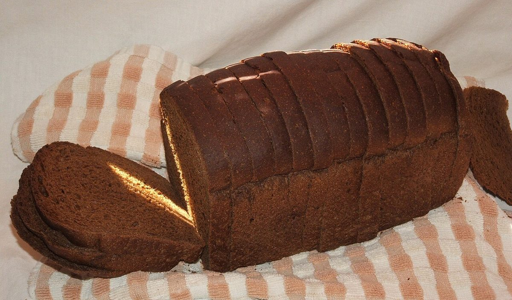

小さなパン屋
パン屋 / 千葉県千葉市花見川区
moitie
千葉県千葉市花見川区にある「小さなパン屋moitie」のご案内ページです。営業時間やメニューなど、詳しいことは準備中。まずはInstagramをのぞいてみてください。

制作側の連想
「moitie」の終わりが「tie」だったので
屋号の由来は分かりません。制作側は、末尾の「tie」からネクタイを連想しました。そこでこのサイトは、ネクタイの結び方を五つ並べる作りにしています。お店の理念や由来とは無関係の、制作側の連想です。
結び方五つ
五つの結び目と、パンの写真。
写真は国外か撮影地不明のフリー素材で、お店の商品ではありません。結び方との組み合わせも制作側の遊びです。
- 01
プレーンノット
結び目がいちばん小さく、手数も少ない結び方。ふくらんだ生地の丸みを重ねました。

撮影地不明のイメージ - 02
ハーフウィンザー
プレーンより少し大きく、左右がほどよくそろう結び方。格子の切り込みを重ねました。

撮影地不明のイメージ - 03
ウィンザー
いちばん大きく、三角にふくらむ結び方。大きな気泡の断面を重ねました。

撮影地不明のイメージ - 04
ボウタイ
首もとで輪をつくる蝶ネクタイ。輪の形のパンを重ねました。

撮影地不明のイメージ - 05
ダブルノット
プレーンをもう一巻きした、少し厚みのある結び方。薄く重なる断面を重ねました。

撮影地不明のイメージ
ご案内
お店のこと(確認できたものだけ)
| 所在地 | 千葉県千葉市花見川区検見川町３丁目３００−２６ |
|---|---|
| 電話 | なし |
| 営業時間 | 準備中 |
| 定休日 | 準備中 |
| ご予約 | 準備中 |
| 駐車場 | 準備中 |
| SNS | Instagram @panya_moitie |